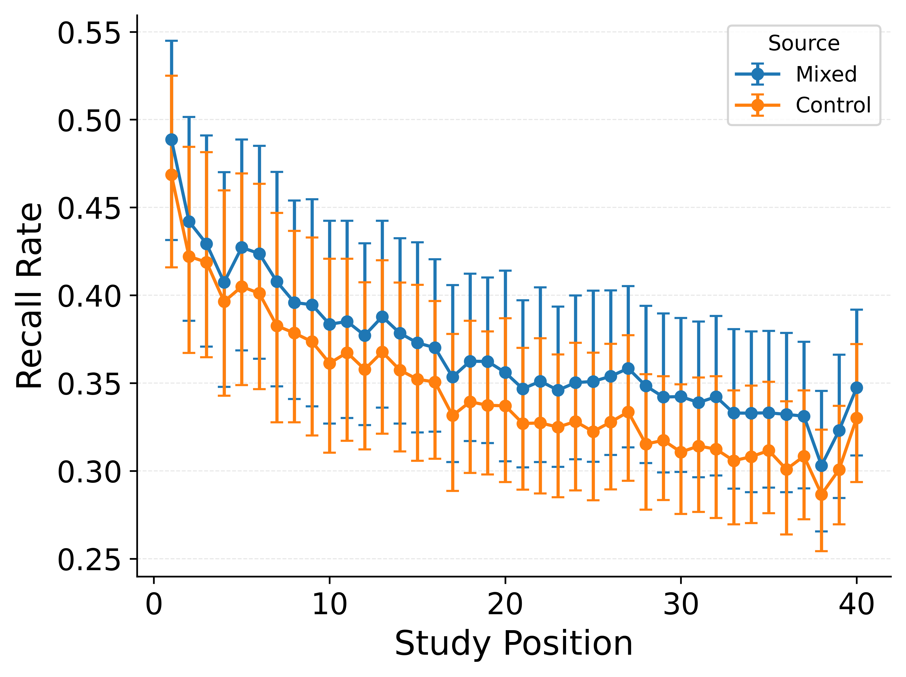

Same Item, Distinct Contexts
Episode-specific reinstatement in free and serial recall
Retrieved-Context Theory

The dominant account of temporal organization in episodic memory search.
The Lag-CRP

What Happens When an Item Repeats?

In standard CMR, item identity drives context evolution at both stages:
- At study: Re-encountering canoe reinstates its prior context, pulling the two occurrence contexts toward each other
- At retrieval: Recalling canoe reinstates a composite blend of both contexts
Three Testable Predictions

1. Neighbor knitting: Recalling a neighbor of one occurrence should elevate transitions to neighbors of the other occurrence
2. Balanced access: After recalling a repeated item, transitions should be equally split between both occurrences’ neighborhoods
3. Forward chaining errors: In serial recall, correctly outputting one occurrence should sometimes propel recall to the other occurrence’s neighbor
No Neighbor Knitting
We compare mixed lists (blue, containing repeats) to position-matched control lists (orange, all unique items). Any elevation of blue above orange isolates the repetition effect.
Data

No elevation at the other occurrence’s neighbors.
CMR Prediction

CMR falsely predicts elevated transitions.
CMR vs. Instance-CMR
Instance-CMR Eliminates Blending
Data
Instance-CMR

Balanced access eliminated. First-over-second restored.
But the data show the first occurrence is even more dominant than the baseline predicts. Something beyond non-interference is at work.
Reinforcement Without Blending
Data
Instance-CMR + Reinforcement

When the item repeats, strengthen the first-occurrence trace without reinstating its context. Study-phase retrieval reconceived as reinforcement rather than associative knitting. One added parameter.
Does Fixing Repetition Break What Works?
Serial Position Curve

Lag-CRP

All standard benchmarks preserved: primacy, recency, contiguity, forward asymmetry. The spacing effect is likewise maintained — contextual variability is sufficient without study-phase retrieval.
Repeated experience strengthens access without sacrificing specificity.
Not through contextual blending, but through differentiated competition.